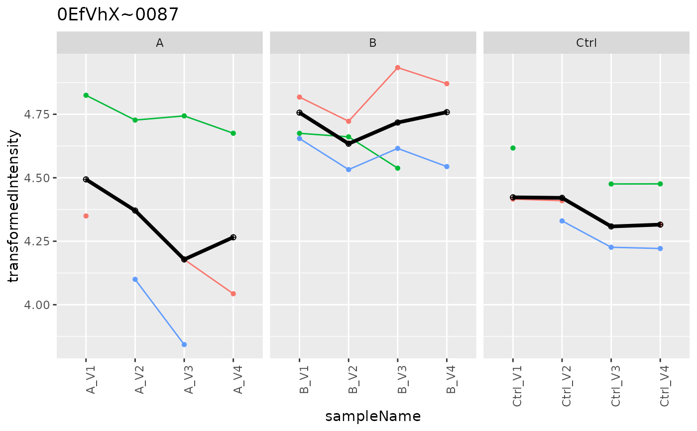

AggregateMedpolish
AggregateMedpolish
Details
Aggregates peptide intensities to protein level using median polish. Works best with variance-stabilized (log-transformed) intensities.
Public fields
lfqLFQData
lfq_aggaggregation result
prefixto use for aggregation results e.g. protein
Methods
Method aggregate()
run median polish aggregation
Method plot()
creates aggregation plots
Method write_plots()
writes plots to folder
Usage
AggregateMedpolish$write_plots(
qcpath,
subset = NULL,
show.legend = FALSE,
width = 6,
height = 6
)Examples
istar <- prolfqua::sim_lfq_data_peptide_config()
#> creating sampleName from file_name column
#> completing cases
#> completing cases done
#> setup done
data <- istar$data |> dplyr::filter(protein_Id %in% sample(protein_Id, 100))
lfqdata <- LFQData$new(data, istar$config)
lfqTrans <- lfqdata$clone()$get_Transformer()$log2()$robscale()$lfq
#> Column added : log2_abundance
#> data is : TRUE
#> Joining with `by = join_by(sampleName, isotopeLabel, protein_Id, peptide_Id)`
agg <- AggregateMedpolish$new(lfqTrans, "protein")
agg$aggregate()
#> starting aggregation
#> completing cases
p <- agg$plot()
p$plots[[1]]
#> Warning: Removed 7 rows containing missing values or values outside the scale range
#> (`geom_point()`).
#> Warning: Removed 4 rows containing missing values or values outside the scale range
#> (`geom_line()`).
